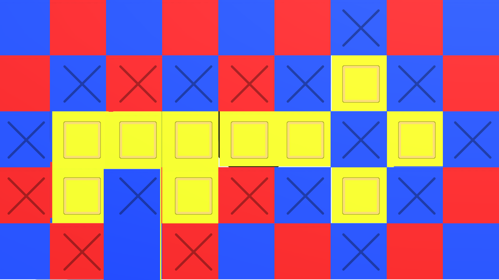

2-D Hidden Picture Puzzle in a 3-D Environment
Experimental Game Design Project, 2023
Engine: Unity
Language: C#
Itch Page
GitHub
Inspired by hidden picture puzzles, this proof of concept challenges the player to navigate a 3D world to uncover hidden 2D shapes.
The player can switch between a perspective camera for exploration and an orthographic camera to flatten depth and reveal hidden patterns.
This project was created in response to the prompt "Find & Click."
The player must locate a "key" shape matching the pattern displayed on the bottom-right of the screen. Using perspective mode, they explore the environment to "find" the pattern.
By pressing "Shift," the player can switch between 3D perspective mode for movement and 2D orthographic mode to remove depth.
In 2D mode, the player can verify patterns and “click” to collect them.
Sometimes, the shape you're looking for may not be immediately apparent when navigating in perspective mode.

Switching to 2D mode eliminates depth, making it easier to discern patterns that were previously hidden.
Switching to 2D mode eliminates depth, making it easier to discern patterns that were previously hidden.